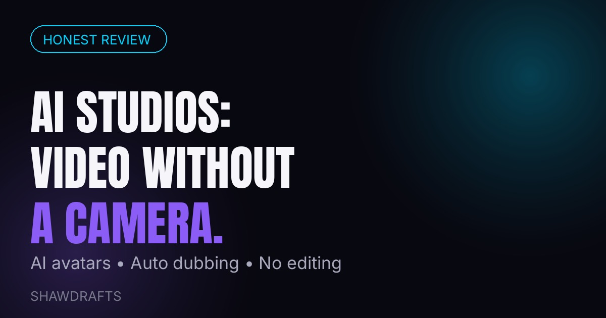

AI Studios Review: Create Videos with AI Avatars
Video is the hardest content format for small businesses. Cameras, lighting, editing, retakes — most founders simply don't have the time. That's the problem AI Studios tries to solve: it's an all-in-one AI video studio that lets you create videos with AI avatars and automatic dubbing, no camera required.
What AI Studios does
At its core, AI Studios turns text into video. You write a script, pick an AI avatar to present it, and the platform generates a talking-head video — with voiceover and dubbing in multiple languages. For a small business that needs product explainers, social clips, or training videos, that removes the two biggest bottlenecks: being on camera and editing.
Who it's actually for
This isn't for filmmakers. It's for marketers, course creators, agencies, and small business owners who need a steady stream of decent-looking video content without a production crew. If you've ever delayed a video project because "I'll record it next week," an AI avatar that never needs retakes is a genuine productivity unlock.
What to watch out for
Be honest with yourself about the trade-offs. AI avatars won't match the trust of your real face on camera for high-stakes sales content. And like every AI tool, the output is only as good as your script — garbage in, robotic video out. Use it for volume content (explainers, FAQs, social clips); keep your face for the content where trust matters most.
Samples: what AI Studios makes
Here's the kind of output AI Studios produces — an AI avatar presenter generated from text, no camera involved:
Above: a sample AI avatar presenter — this is the "talking head" style AI Studios generates from your script.
Text-to-Video
You paste or type your script → pick an avatar → the platform renders a presenter video with voiceover. Output formats work for YouTube, Instagram Reels, TikTok and training portals.
Text-to-Image
Need a thumbnail or a scene background? AI Studios also generates still images from text prompts — useful for video covers and social posts.
How it works (3 steps)
- Write or paste your script — any topic, any length. The AI reads it naturally.
- Pick your avatar & voice — choose from the avatar library, set the language and voice style.
- Generate & download — the video renders in minutes. Auto-dubbing translates it into other languages.
The bottom line
AI Studios is a practical tool for a real problem: small teams need more video than they can produce. If that describes you, it's worth a look.
Want to try it? Create your first AI video in minutes — no camera needed.